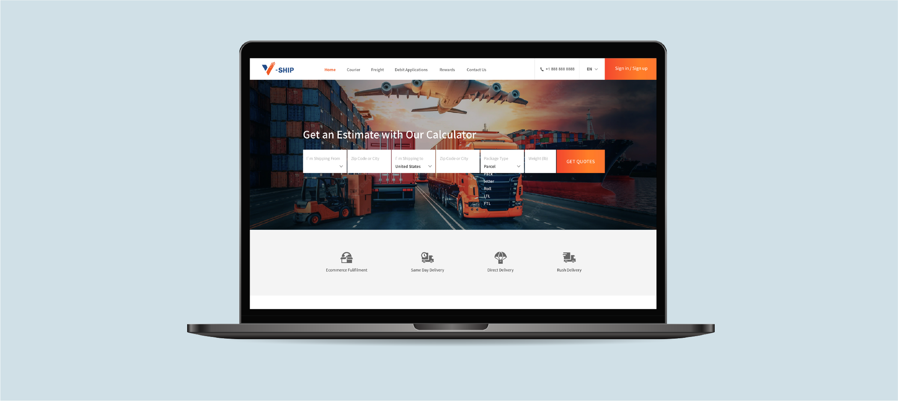
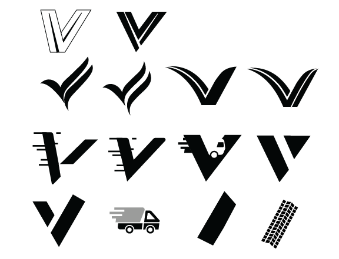
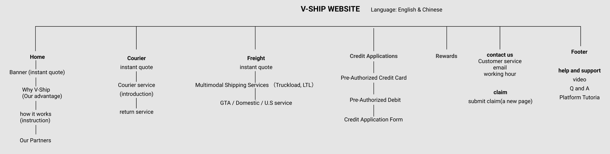
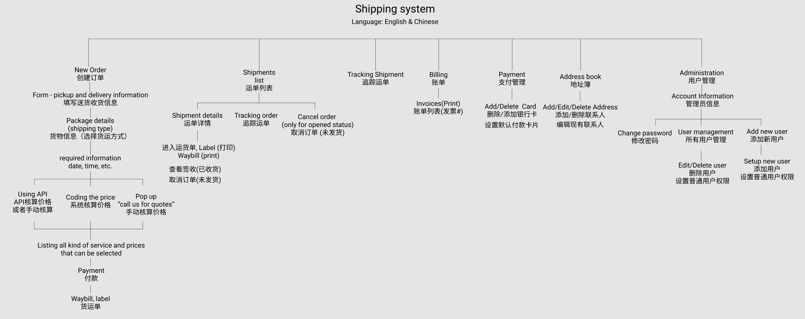
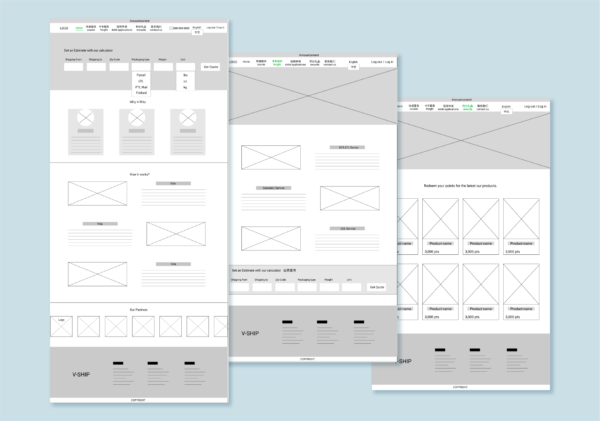
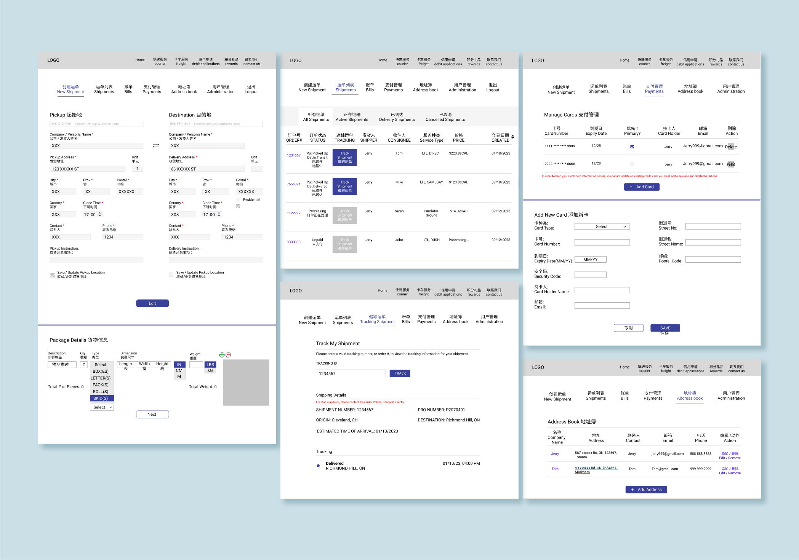
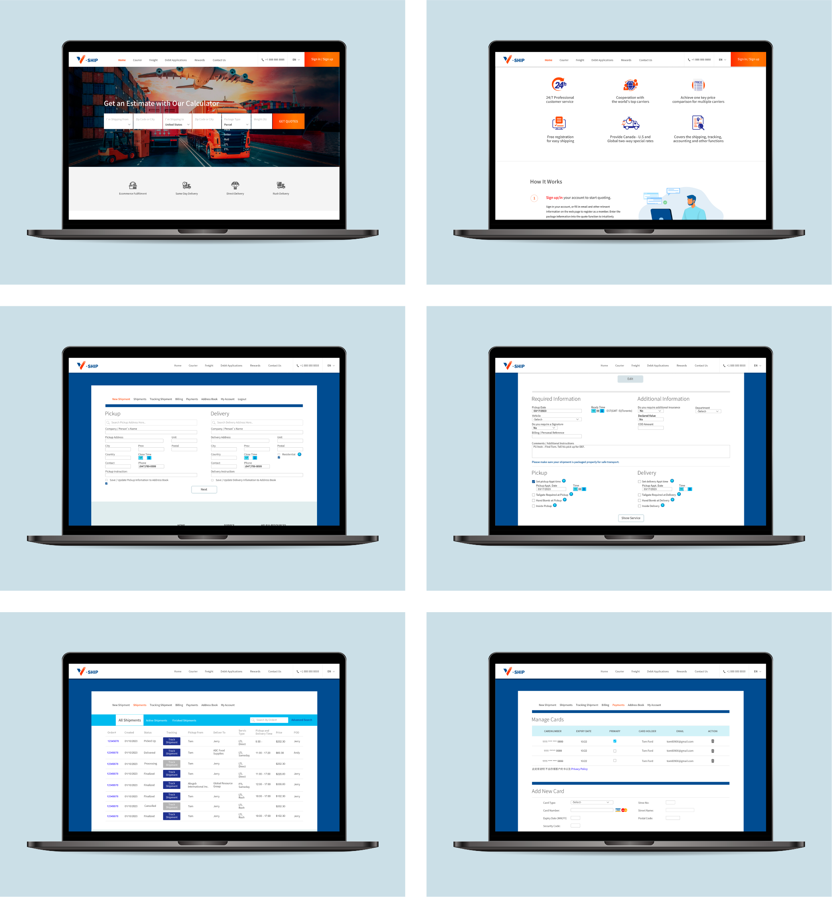

V-ship is a startup logistics company focused on providing a streamlined shipping solution for small to large businesses. I joined as the founding designer and led the design of a B2B shipping platform from 0 to 1.





